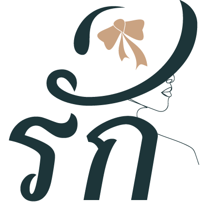

Về Tiệm Nhỏ
"Tiệm Nhỏ — nơi những điều nhỏ bé mở ra những cuộc gặp gỡ lớn lao."
Chào mừng bạn ghé thăm Tiệm Nhỏ Suy Tư, nơi tụ hội của những góc nhỏ xíu nhỏ xiu, chill chill. Những cái ôm
bằng ngôn từ, cùng những khám phá để cùng nhau chiêm nghiệm giữa nhịp sống hối hả. Tớ là ... là chủ tiệm nhỏ
này.
Chào mừng bạn đã đến thăm website cũng như đã tò mò về tớ nhé! Chúc bạn có một trải nghiệm thật dịu dàng ở nơi
đây.
Nếu có ai hỏi: “Ở đây Tiệm Nhỏ bán gì?”, tớ sẽ trả lời:
Tiệm Nhỏ bán những điều không cầm nắm được.
Ở đây, Tiệm bán những câu chuyện để bạn tìm thấy mình trong đó, những góc nhìn để bạn nhìn thế giới theo một cách khác, những câu hỏi để bạn lắng nghe lòng mình, và những phép màu bé nhỏ khiến cuộc sống trở nên đáng yêu hơn.
Tiệm có những mùa để bạn bước vào, những cuộc hóa thân để bạn thử làm một người khác, rồi từ đó hiểu thêm về chính mình.
Không biết bạn sẽ mang gì đến, cũng chẳng biết khi rời đi bạn sẽ mang theo điều gì. Nhưng biết đâu, giữa những điều nhỏ bé ở đây, bạn sẽ tìm thấy một điều mà mình đã vô tình bỏ quên.
Những Chiếc Túi Thơm Treo Gom Nhặt Ký Ức
Ở đây, Tiệm gom nhặt những điều không cầm nắm được thành những nốt hương dịu lành. Nhấp nhẹ vào từng chiếc túi để lắng nghe lời thì thầm dành riêng cho bạn hôm nay:
Cỏ Non Sau Mưa
“Gột rửa hết những hạt bụi mỏi mệt của ngày hôm qua. Hãy hít một hơi thật sâu, để mùi cỏ non sau mưa nhắc bạn rằng: hôm nay luôn là một khởi đầu hoàn toàn mới mẻ, tinh khôi và dịu lành.”
Những Điều Nhỏ Bé Mở Ra Gặp Gỡ Lớn Lao
Mỗi góc nhỏ tại Tiệm là một trạm dừng chân tĩnh lặng để bạn chiêm nghiệm, tìm lại sự an yên giữa nhịp sống hối hả:
Những Trò Chơi Hóa Thân
Thử một lần làm chiếc lá mùa thu chao nghiêng, một viên sỏi lấp lánh ven suối, hay chiếc bánh quy thơm lừng vừa ra lò... Để nhìn cuộc đời từ một góc khác, rồi từ đó hiểu thêm về chính mình.
Những Câu Hỏi Bất Ngờ
Những câu hỏi tĩnh lặng xuất hiện bất chợt để bạn tạm dừng bước chân vội vã, lắng nghe thanh âm thầm kín và đối thoại chân thành cùng góc khuất trong tâm hồn.
Bốn Mùa & Những Điều Nhỏ Bé
Bước qua xuân, hạ, thu, đông của cảm xúc; chạm vào những phép màu giản đơn mà mắt thường dễ lướt qua, để lòng dịu lại sau những ngày dài mỏi mệt.

Bạn Tò Mò Người Đứng Sau Tiệm Nhỏ?
Không có tập đoàn ngầm hay âm mưu drama nào cả. Chỉ có một người phàm trần nhạy cảm với ly trà ấm, chiếc bàn phím gõ lạch cạch lúc 2 giờ sáng và những dòng chữ biết ôm dành riêng cho bạn.
Ghé đọc Lời Tự Sự của Tình →